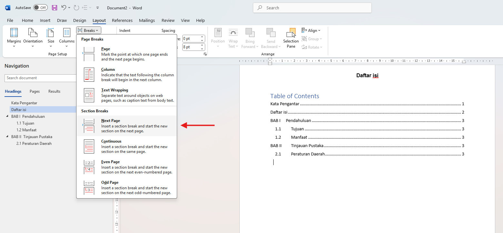
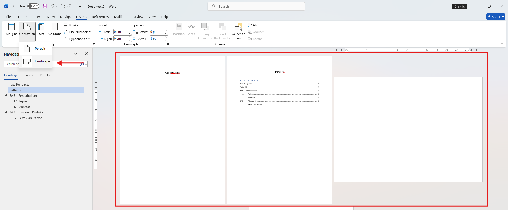
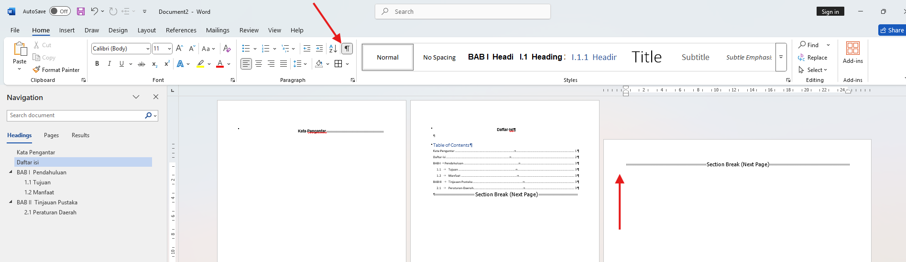

Penjelasan Masalah
Section Break merupakan indikator pembatas untuk memisahkan beberapa halaman pada microsoft Word agar memiliki format yang berbeda.
Langkah Penyelesaian
- Untuk memasukkan section break buka tab layout kemudian pilih Breaks, pada Section Breaks pilih Next Page. 
- Setelah Section Break dimasukkan maka akan menambahkan halaman baru kebawah halaman ini nantinya akan memiliki format yang berbeda dengan halaman sebelumnya.
- Sebagai contoh saya akan mengubah halaman baru agar berorientasi landscape dengan mengaturnya di tab layout kemudian page orientation landscape. 
- Selain orientasi halaman section break juga dapat digunakan untuk membedakan header/footer, format penomoran halaman, margin, dan watermark.
- Untuk menghilangkan section cukup tekan icon show/hide yang berfungsi memperlihatkan fungsi yang tersembunyi salah satunya section break, setelah section break muncul taruh cursor di depanya kemudian tekan delete pada keyboard. 